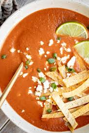

Sopa tarasca

Description
Sopa tarasca, absolutely amazing bean soup! I can really only make others eat beans in this meal, ha!
Ingredients
- 1 cup pinto beans
- 1 onion
- 2 tablespoons of olive oil
- 4 pieces of garlic
- 1/2 tablespoon chilli
- 1 can tomatoes
- 2 spoon cumin
- 3 cups beef stock
Steps
Making the soup
- Make sure you leave the beans in a bowl full of water and leave on a counter overnight.
- Fry onion in a pan. Add spices and garlic, fry until fragrant.
- Add beans and stock.
- Cook until soft.
- Mix with a hand blender.
- Serve with nachos on top.
Home